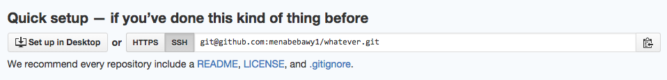
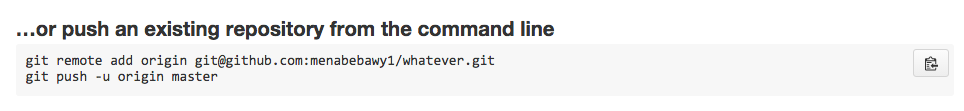
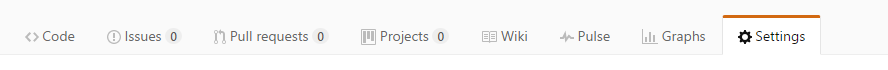
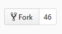

GitHub Tutorial
by Mena Bebawy
Git vs. GitHub
What is git?
Git is version control software that helps you save your work. It allows you to save your changes as you progress and you can refer back to any version of your work whenever you want. Unlike Github, git runs locally. Meaning that the work you do on git is only saved on your device. Git also does not need Github to run in order to work.
What is github?
Github is where you save your repository. Unlike git, github requires git in order to run. Github also runs in the cloud where you can save all your changes without having to worry about losing them. You can use github to work with others on the same project simultaneously without affcting eachother's work. You can also see your changes in order and return your project to an older version if you decide to do so.
Initial Setup
In order to setup your github account follow this tutorial:
- The first thing that your going to need to do is sign up for github by going to this site.
- You will then need to press the signup button in the top right corner.
- You will then enter your username, e-mail, password and then confirm password. Then press create account.
- Github will then send you an e-mail; verify it in order to confirm the sign-up.
- Now that you are signed up, you will need to create an SSH key. Go to the topleft corner and press on the down arrow next to your logo, then press setting.
- You will see a menu on the left side of the page, press on SSH and GPG keys.
- Then press on New SSH key.
- Type in your title and key.
- In order to get your key, go to cloud 9 and without opening your IDE, press on the gear icon in the topright and press on the SSH key. Copy the SSH key which should look something like this:

- then press on Add SSH Key.
- You are now done!!
Repository Setup
- Go to your cloud 9 and create a repository by typing in
mkdir RepositoryNAME. Then go to that directory by typing incd RepositoryNAME. In your command line, once you make sure you are in the right directory, create your repository. - Type in
git initin order to make a new repository. - Make the changes you need to your README file and wait until it is saved.
- Add your file to the staging area by typing in
git add .. This will add your file to be commited. - You will then need to commit your files by typing in
git commit -m "message name". Make sure that your message is appropriate; it should tell you what changes you made and be in the present tense. _EX: "fix screenshot" - You will then need to go to github and create a repository by going to the top right corner and pressing on the + and then clicking on "new repository". As shown Above:

- You then name your repository and decide if you want it to be private or public. Remember: your repository name has to be the same as your directory's name.
- Press on create new repository, then you will see in the top left corner SSH or HTTPS; choose the SSH option as show in the image below. 
- Then Scroll down untill you see this:
 - Copy the first line:
git remote add origin git@github.com:<username>/trial.gitand paste it into your command line. This should establish the place where you will be pushing your files. - Copy the second line:
git push -u origin masterand paste it as well in order to push your changes to github. Once this is done you should refresh your github page and see your new changes.
Workflow & Commands
Here is how your Workflow or cycle on git should look like:
- Make changes to your README file.
-
Add the file to the staging area by using
git add .or add all changed and deleated files by usinggit add --all. - Type
git statusin order to see if the files are added or not. - You will then need to commit your files using
git commit -m "Message name". - You will finally need to push your files where you will see them on github using
git push. - Type
git statusto see your pushed and saved files.
NOTE: git status is a very helpful command, using it frequently will help you check your work.
Here are some commands to help you:
git init
Meaning: Initialize a git repository
Task: Initializes a repository in order to save changes.
Example: git init
rm -rf .git
Meaning: delete the hidden git repository
git add file
git add .
Task: Adds only modified files
Example: git add .
git add --all
Task: Adds all modified and deleted files to the staging area.
Example: git add --all
git commit -m "message"
Task: Saves the file with a certain message
Example: git commit -m “Project version 1”
git push
Meaning: Pushes your changes to github
git diff
git diff
Task: Shows you the difference between the older file and the modified one.
Example: git diff
git log
Task: Helps you see your past actions and the different versions of the file.
Hint: You need to press Q to exit
Example: git log
git remote -v
Meaning: tells you where you are pushing your files
Git status
Task: Tells you the files that have been changed since last edited
Example: Git status
Error Handling
As a beginneer, there are many mistakes that you do accidentally on git, but what is more important is that you learn how to git rid of these mistakes.
If you ever do git init in the wrong directory, here is what you need to do:
- Type
rm -rf .gitin order to get rid of the hidden git folder. - Then go to the file where you actually want to create your repository by typing in
cd fileNAME. - Now type in
git initand now you have your repository in the right place.
If you want to completely remove a repository (local & remote) then follow these steps:
- Type
rm -rf .gitin order to get rid of the hidden git repository. - Then go to github and go to your repository.
- Once you're there, go to the setting icon in the topleft as shown: 
- Then scroll down all the way to the bottom and click on delete repository.
- Type in the repository name in order to confirm the deletion.
If you ever type in git commit without the message name then follow these steps:
- If you look at the bottom it will show you some commands.
- You will see that exit is one of them.
- Next to it you will see the command you need.
- press
command xin order to exit and go back to the code.
Collaboration
In order to work with others on the same project, you will need to follow these steps:
- You will first go to the project that you want to work with another person with.
- In the topright press on fork in order to make a copy of their repository as shown: 
- you will then need to clone the repository by going to the clone or download button:
- Then copying the link.
- Now go to cloud 9, type
git clonefollowed by the link. - Now that you have repository on your local git, make the changes you need to the README file.
- Add the file to the staging area by using
git add . - You will then need to commit your file using
git commit -m "Message name". - You will then need to push your file using
git push. - Now go to github and submit a pull request by clicking on create pull request.
- Wait for your partner to accept your pull request.
- Finally type in
git pullin order to see your edits that your partner accepted. - You are now FINISHED!